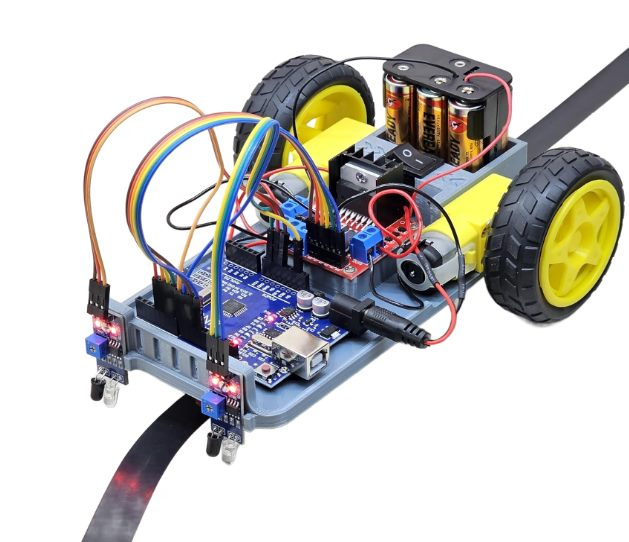

Robotics
LINE FOLLOWING ROBOT.
A 2WD robot that tracks a black line on a light surface using a pair of IR sensors, built on a 3D-printed chassis and driven by an Arduino Uno.

How it works
Two infrared sensors sit at the front of the chassis, angled at the ground just ahead of the wheels. Each sensor shines infrared light at the surface and reads how much bounces back: a dark line reflects less than the light surface around it, so each sensor reports whether it is currently over the line or off it. The Arduino reads both sensors on every loop and adjusts the two drive motors accordingly: both sensors on the line drives straight, one sensor drifting off the line slows that side down to steer back onto it, and both sensors off the line stops the robot.
Components used
Identified from the build shown above. Exact part models may vary by supplier.
Arduino Uno (or compatible board)
Runs the control logic: reads both line sensors and drives the motors in response.
Motor driver module (H-bridge)
An L298N / L293D-style driver board that lets the Arduino's low-power signal pins control the higher-current drive motors.
2x TT gear motors and wheels
The 2WD drivetrain. Each side is driven independently, which is what allows the robot to steer by varying left/right speed.
2x IR line-tracking sensors
Adjustable-threshold infrared modules mounted at the front, one over each edge of the line.
3x AA battery holder with switch
Onboard power for the electronics and motors, with a physical on/off switch.
3D-printed chassis
The structural base holding every component, printed in-house rather than a bought plastic kit chassis.
Example Arduino sketch
A representative implementation of the control logic described above, using two digital line sensors and a standard H-bridge motor driver.
// ROBOVATIVE - Example Line Following Robot Sketch
// Two IR line sensors + H-bridge motor driver (L298N / L293D style)
// Pin numbers below are illustrative - match them to your own wiring.
const int leftSensorPin = 2;
const int rightSensorPin = 3;
const int leftMotorForward = 5; // PWM
const int leftMotorReverse = 6; // PWM
const int rightMotorForward = 9; // PWM
const int rightMotorReverse = 10; // PWM
const int baseSpeed = 150; // 0-255
const int turnSpeed = 70; // slower side speed while correcting
void setup() {
pinMode(leftSensorPin, INPUT);
pinMode(rightSensorPin, INPUT);
pinMode(leftMotorForward, OUTPUT);
pinMode(leftMotorReverse, OUTPUT);
pinMode(rightMotorForward, OUTPUT);
pinMode(rightMotorReverse, OUTPUT);
}
void loop() {
// HIGH = sensor is over the line on most modules.
// If your robot steers backwards, swap HIGH/LOW below or
// check the sensor's own calibration trimmer first.
bool leftOnLine = digitalRead(leftSensorPin) == HIGH;
bool rightOnLine = digitalRead(rightSensorPin) == HIGH;
if (leftOnLine && rightOnLine) {
drive(baseSpeed, baseSpeed); // centered on the line
} else if (leftOnLine && !rightOnLine) {
drive(turnSpeed, baseSpeed); // drifting right, correct left
} else if (!leftOnLine && rightOnLine) {
drive(baseSpeed, turnSpeed); // drifting left, correct right
} else {
drive(0, 0); // line lost, stop
}
}
void drive(int leftSpeed, int rightSpeed) {
analogWrite(leftMotorForward, leftSpeed);
digitalWrite(leftMotorReverse, LOW);
analogWrite(rightMotorForward, rightSpeed);
digitalWrite(rightMotorReverse, LOW);
}